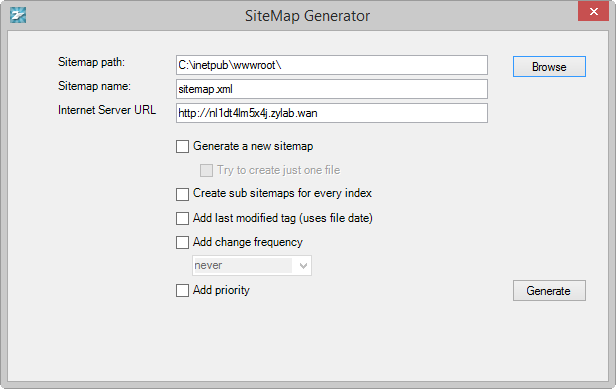
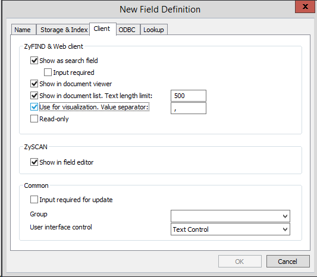
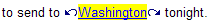

When you create a web client you link one or more indexes to it, specify users, customize its appearance by changing styles and templates, and apply various search functionalities.
Create and edit a Web Client using the following procedures:
Create a Web Client (page 118)
General options (page 119)
Add or Delete Users (page 124)
Add or Delete Index(es) (page 126)
Templates and Styles (page 127)
Edit Hit Markers (page 131)
Added login via cookie (page 132)
Disable Caching (page 133)
View Hit Highlighting in Adobe PDF Files (page 134)
Global Search Folders for Web Client (page 135)
Be careful when making changes as certain changes are saved immediately without a prompt! For every template a number of styles are available. If a style is not relevant for a template, it is not mentioned/changed.
ZyINDEX is open.
You have created a Web Client.
ZyINDEX > Web Client is open. You created a Web Client and the web client tree is expanded in the ZyINDEX web client panel.
You checked and defined the General options.
You want to open ZyLAB Archives via Internet search engines such as Google, Yahoo, etc. In order to do so, a sitemap must be created. A sitemap is used by webmasters to inform search engines about pages on their sites that are available for crawling. Using the Sitemap protocol does not guarantee that web pages are included in search engines, but provides hints for web crawlers to do a better job of crawling your site.
Documents need to be transformed to plain HTML for indexing by search engines. A special template (Search engine optimization) is created for that reason. To edit this template and optimize your web presence, go to the Templates section of a Web Client, and double click on the Search engine optimization template. All options of the template are explained clearly in the template. The template works for both electronic and scanned documents.
Once ZyNET.exe detects a defined user agent (for example a web browser or search engine crawler), ZYNET.exe will display a special page that shows the HTML text version of a document.
Periodically refresh the SiteMap to make sure URLs of new documents are added.

Due to security issues, the SiteMap XML file must be placed in the root folder of the Web Client.
Make sure you use a different Sitemap name for each Web Client that you want to be indexed by user agents. If you do not, older files with the same name will be overwritten.
To limit the number of SiteMaps, select the checkbox "Try to create just one file".
The maximum size of a SiteMap is 50000 URLs or 10MB. The maximum size of a SiteMap index is 1000 SiteMaps.
The value 'always' should be used to describe documents that change each time they are accessed. The value 'never' should be used to describe archived URLs.
Please note that the value of this tag is considered a hint and not a command. Even though search engine crawlers may consider this information when making decisions, they may crawl pages marked 'hourly' less frequently than that, and they may crawl pages marked 'yearly' more frequently than that. Crawlers may periodically crawl pages marked 'never' so that they can handle unexpected changes to those pages.
Due to technical limitations the generated values are default values. These values can only be changed manually.
Valid values range from 0.0 to 1.0. This value does not affect how your pages are compared to pages on other sites - it only lets the search engines know which pages you deem most important for the crawlers.
The default priority of a page is 0.5.
Please note that the priority you assign to a page is not likely to influence the position of your URLs in a search engine's result pages. Search engines may use this information when selecting between URLs on the same site, so you can use this tag to increase the likelihood that your most important pages are present in a search index.
Also, please note that assigning a high priority to all of the URLs on your site will not guarantee that web pages are included in search engines. As the priority is relative, it is only used to select between URLs on your site.
Due to technical limitations the generated values are default values. These values can only be changed manually.
You have created a web client that will be indexed by Internet search engines, and created a sitemap to inform search engines about pages which are available for crawling, then you defined the user agents that are allowed to crawl your pages.
Ensure that user agents will also view the latest documents by periodically generating a new sitemap.
ZyINDEX > Web Client is open. You have created a Web Client and the web client tree is expanded in the ZyINDEX Web Client panel. You have imported/created Users and User Groups in ZyINDEX > Security. For more information, see the ZyINDEX manual > Import Users (page 173), Create Users (page 180) and Create User Groups (page 169).
You have added users and/or user groups to the Web Client.
To delete a User or User Group, select one and click Delete.
You want to deny access to an index (on a Web Client) for specific user(s), group(s) or role(s).
You have denied access (for a user, group or role) to an index. If this index is added to a web client, it will not be visible to this user, group or role.
ZyINDEX > Web Client is open. You created a Web Client and the web client tree is expanded in the ZyINDEX web client panel.
You added index(es) to the Web Client.
The sequence of the indexes can be changed using the blue arrows on the right hand side. This sequence will be shown in the Web Client search panel.
To delete an index, select it and click the Delete button.
If the user does not have permission to access the folders where an index is stored, then that index will not appear in the list on the Web Client search panel.
Facets are only shown in the Web Client if the documents have field values and the visualization is set for the defined fields:

The Web Client is made from Templates (page 128) with Styles (page 129) controlling the appearance of the templates. ZyLAB Web Client is supplied with standard Default, Classic and Enterprise styles with can be applied to your Web Client to change its appearance. The changes are visible in the browser when the screen is refreshed.
It is also possible to edit the individual templates, but a good working knowledge of HTML is required for this.
Check all changes you have made to Web Client styles in your internet browser before releasing the Web Client.
The templates are listed with their current style. Right click on a template to choose the View and Edit options (see below).
A new style can be applied to the templates to change the style of the Web Client (Change the style of the templates (page 130)).
To view a template from the dialog box, right click on it and select View. This option will only work if you have defined an HTML browser in Options > Web Client (see General options (page 119)).
You can also browse to the particular template you want to see. The file should have an *.HTM extension and should be located in the WWW root directory that can be found in the Inetpub folder.
You can edit individual HTML pages using a text editor, for example Notepad. You can define the HTML Editor in Options > Web Client (see General options (page 119)).
One of the listed styles can be applied to your Web Client to change its appearance (Change the style of the templates (page 130)):
Default - contains all basic functionalities and is a user-friendly and intuitive HTML style.
Section508
ZyINDEX > Web Client is open. You created a Web Client and the web client tree is expanded in the ZyINDEX Web Client panel. You want to change the style of the Web Client's user interface.
If you want to change the style of one template, first select the template from the list, and select another available style for that template only. Now, when asked if you want to change all templates, click No.
You have changed the style (user interface) of a Web Client. If your ZyLAB Web Client is open in an internet browser refresh the screen to show the changes.
If you want to view a template, select it, and click View. This will only work, if you defined a HTML browser via Options > Web Client (see General options (page 119)).
The hit markers appear each side of a hit and are used to jump to the previous or next hit: . You can change the markers to your own preferred marker image by creating new images and replacing the original images.
Note: Hit markers only appear in electronic documents and not in scanned documents.
Renaming the files allows you to revert to the original hit markers.
You have changed the hit markers.
A cookie device is enabled to allow removal of the NT_User details from the URL. Also, your username and password are saved so you do not have to login each time.
When caching is enabled, you can save bandwidth and reduce processing time when viewing documents and images on the web. ZyNET will send a new version only if documents/images have been changed, otherwise stored (cached) content will be used. Caching is enabled by default.
Caching will be disabled.
It is recommended to disable caching when using Annotations. Changes to certain plugin fields are not shown when caching is enabled (this has to do with the fact that changes are not reflected in the modified date/time).
Caching works for the following ZyNET actions:
tiff2png (showing images as inline-PNG-images) also supports caching. Caching cannot be disabled, but tiff2png has no problems with plugin fields.